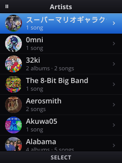
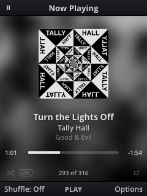
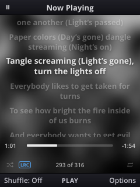
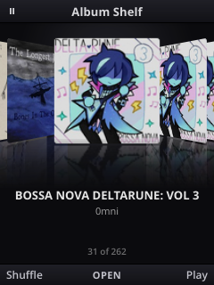
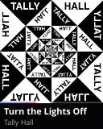
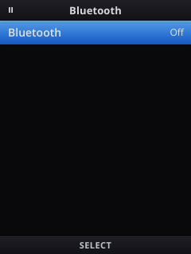

Small screen. Big library.
Everything is laid out for a 240×320 screen and twelve buttons. Lists glide, covers slide, and nothing ever needs a touchscreen.
Your whole library, sorted
Artists, albums, songs, folders, playlists, favorites, recently added and most played. It's all built from the tags already in your files, cover art included.
- Reads MP3, M4A, FLAC, Ogg and Opus tags
.m3uplaylists are picked up automatically- Press 2 through 9 to jump by letter, hold to fly through long lists

Now Playing, with lyrics
A blurred cover fills the background, the art slides when you skip, and it shrinks when you pause. Press Down and synced lyrics scroll along with the song.
- Hold left or right to scrub, or press 0 through 9 to jump
- Smart shuffle: favorites come up more often, and the same artist never plays twice in a row
- The song info reaches Bluetooth headphones and car stereos


The Album Shelf
Flip through every album as a row of tilted covers. The animation runs on the compositor, so it stays smooth even on a phone this small.

Lives on the lid
With the phone shut, the outer screen shows a vinyl clock with today's listening stats. The ring ticks with the seconds and turns into a battery gauge on the charger. Start a song and it switches to the cover, the title and the current lyric line.
- Hold Vol+ to skip, hold Vol− to play or pause
- Quick presses still change the volume

It's the home screen
Flippod replaces the stock launcher. An Apps menu opens everything else, and Bluetooth settings live inside Flippod, so you can pair headphones without the system's quick settings.

One command to sync
flippod-sync runs on your computer. It fetches synced lyrics from LRCLIB, copies only what changed, and tells Flippod to rescan.
$ flippod-sync Lyrics: looking up 273 song(s) on LRCLIB... 273/273 found 182 531 file(s) on the laptop, 181 to copy (0.4 MB) copied folder 1/1 Flippod rescanned: {"added":0,"removed":0,"total":316} # --dry-run to preview, --delete to mirror removals
A few good KaiOS tricks
KaiOS 4 is Firefox's engine running on Android's bottom layers. Every app is a web app, and that made some fun things possible.
A swapped launcher
KaiOS hardcodes its home screen to launcher.localhost, which is served from a symlink on the writable data partition. Point it at Flippod and the phone boots into it. Pointing it back undoes it.
A patched lid
The outer screen is a page inside the system app, also loaded through a symlink. A copy of it with two extra tags adds Flippod's layer on top, while calls and the selfie camera keep working.
Settings as a wire
Flippod and the lid page talk through KaiOS's own settings service, using flippod.np, flippod.lyrics and flippod.cmd. That's how the side buttons reach the player.
Smooth on purpose
Moving content with JavaScript every frame was too slow on this chip, so lists scroll natively and the shelf uses CSS transitions. Gecko and the GPU do the heavy lifting.
Remote debugging
A tiny Firefox remote-debugging client drives the phone from a laptop. It can run code in any app, take screenshots of both screens and press keys, and the whole app was built and tested that way.
Its own tag reader
It handles ID3v2.2 through 2.4, ID3v1, MP4 atoms, FLAC and Ogg comments, and reads only the bytes it needs, so a 300-song library scans in about ten seconds.
Twelve buttons, zero taps
| ↑ ↓lists, hold to speed up | Move |
| 2…9lists | Jump by letter |
| OKNow Playing | Play or pause |
| ← →Now Playing | Previous or next, hold to seek |
| ↓Now Playing | Show or hide lyrics |
| ↑Now Playing | Up Next |
| Callanywhere | Jump to Now Playing |
| Hold Vol+ / Vol−lid shut | Next track / play or pause |
- Root the phone. Flippod needs
adb rooton a TCL Flip 4 (T440W). See tcl-flip-4-root. - Install and make it home.
tools/deploy.sh tools/homescreen.sh on
- Add the lid layer (optional).
tools/outer.sh on
- Put music on it. Copy it into the phone's
musicfolder over USB, or runtools/flippod-sync. Everything above can be undone withoff.